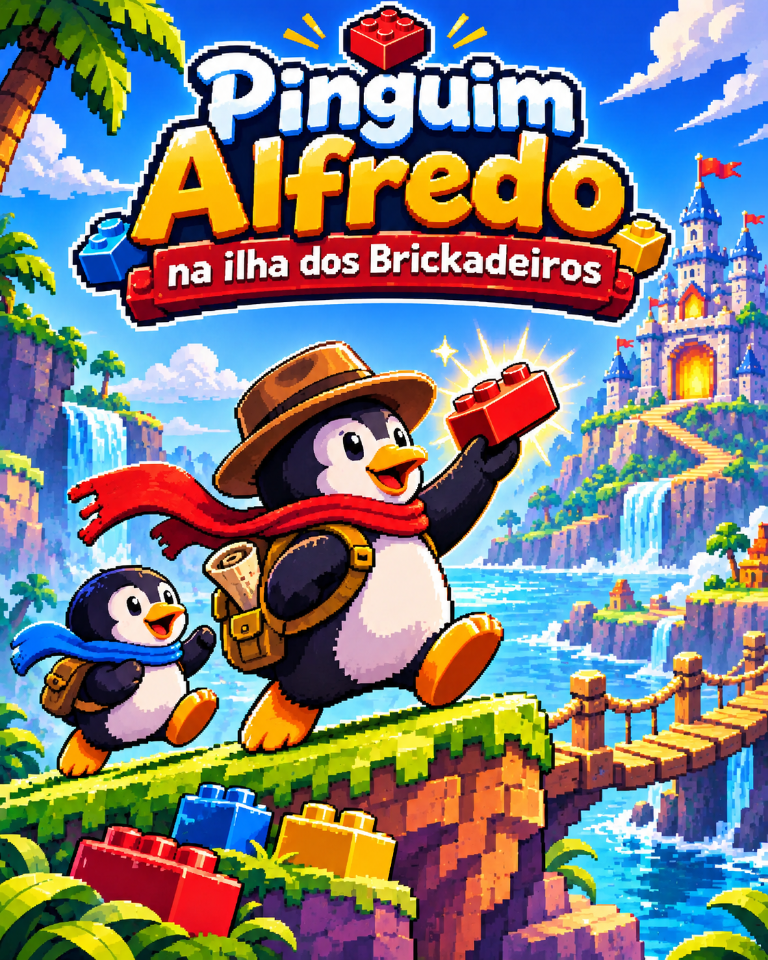

ILHA DOS BRINCADEIROS
A aventura de Alfredo e do irmãozinho · Capítulo 1: O Mistério da Ilha dos Blocos Perdidos
✦ Explora · Descobre · Constrói · Navega
🐧
ESPAÇO / ENTER para continuar · ESC para fechar
🌴 Praia do Começo✦ Objetivo: Encontra o bilhete e o mapa antes de zarpar.🎒 Mochila: vazia🗺️ 1/6 zonas⌨️ Setas/WASD mover · Espaço interagir
Dica: aproxima-te dos objetos e passagens e carrega em Espaço. Ativa a música no botão. O jogo guarda automaticamente o progresso neste navegador.

Prefácio — O Mistério da Ilha dos Blocos Perdidos
Alfredo é um pinguim aventureiro que percorre o mundo à procura dos blocos LEGO mais raros. Ele e o seu irmãozinho, embarcam juntos em maravilhosas aventuras. Numa manhã envolta em nevoeiro, os dois irmãos estavam na praia...
O que será que vai acontecer?